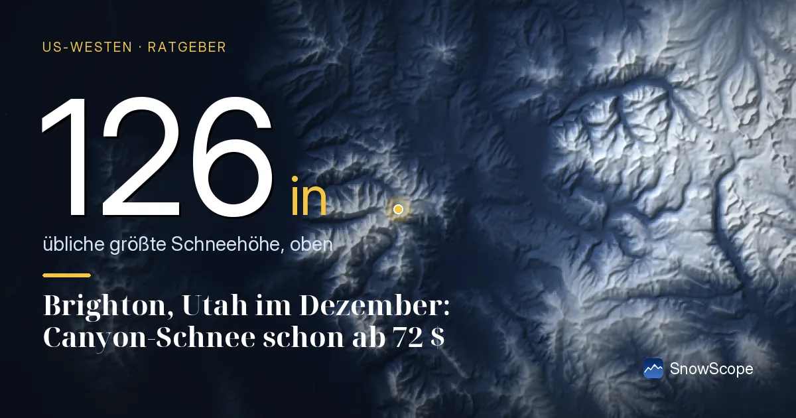

Brighton, Utah im Dezember: Canyon-Schnee schon ab 72 $
Brighton sitzt hoch im Big Cottonwood Canyon, wo die Basishöhe ihm einen Vorteil gegenüber tieferen Resorts in Utah im Dezember gibt. Frühjahrsschnee hier ist zuverlässig genug, dass 89 Prozent der vergangenen Winter bis Mitte Dezember Schneedecke hatten, und ein Tagesticket kostet 72 Dollar, wenn du voraus buchst.
Die Live-Schneeprognose für Brighton Resort in der SnowScope-AppSchneehöhen, Pulverschnee-Alarme und 3D-Karte, gratis.
Warum Höhe im Dezember zählt
Brightons Basis auf 2.666 m bedeutet, dass es Wochen früher Schnee sammelt als Resorts in den Tälern. Um Mitte Oktober erreicht Dauerhafer normalerweise die mittlere Höhe auf 2.925 m. Der Vorsprung ist entscheidend: am 1. Dezember, wenn tiefere Terrain oft kahl ist, hält die mittlere Höhe hier bereits etwa 70 cm.
Die Canyonlage zählt auch. Kalte Luft fließt von oben herab, und das Grat-Gelände auf 3.185 m fängt Schnee auf, den tiefere Bereiche verpassen. Das ist der Grund, warum die Tiefenkluft zwischen Basis und Gipfel den Monat über wächst.

Dezember Woche für Woche verfolgen
Am 15. Dezember liegt die mittlere Höhe bei 94 cm, mit 68 cm an der Basis und 115 cm oben. In fast 9 von 10 Wintern aus den Aufzeichnungen hatte die mittlere Höhe bis zu diesem Datum mindestens 50 cm. Selbst ein magerer Dezember – einer von zehn – lieferte dort 52 cm.
Am ersten Weihnachtstag wird das Bild stärker. Die mittlere Höhe erreicht 122 cm, und 98 Prozent der Winter hatten mindestens 50 cm. Am 31. Dezember beträgt die typische Tiefe 133 cm in der mittleren Höhenlage, wobei 100 Prozent der Winter über 50 cm liegen.

Ticket-Preise und wann du kaufen solltest
Brighton nutzt flexible Preise bei seinen Tagestickets 2026/27. Der Startpreis ist 72 Dollar, aber nur für Frühanmelder; Feiertage und Last-Minute-Käufe kosten mehr. Der klarste Rat des Resorts ist einfach: Kaufe dein Ticket online vor dem Termin, wenn du die beste Rate haben willst.
Für einen mehrtägigen Besuch lässt dich die Go Card drei, vier oder fünf Volltagskarten auf einer Karte mit bis zu 40 Prozent Rabatt auf die Volltagsrate laden. Sieh auf der Resort-Seite nach dem genauen Dollarbetrag zu deinen gewählten Daten, denn die Preise verschieben sich mit der Nachfrage.
Wie Brighton mit nahegelegenen Optionen vergleicht
Park City Mountain Resort sitzt über dem Grat und ist berühmt für seine Größe, aber seine Schneegeschichte erzählt im Dezember eine andere Geschichte. Am 15. Dezember hält die mittlere Höhe von Park City typisch 64 cm, und nur 72 Prozent der Winter hatten 50 cm oder mehr. Brightons Zahlen sind zum gleichen Termin stärker.
Beaver Mountain bei Logan berechnet ein pauschales Erwachsenenticket von 75 Dollar und hat am typischen 15. Dezember 57 cm in der mittleren Höhenlage, wobei nur 57 Prozent der Winter über 50 cm liegen. Brighton kostet ungefähr gleich, wenn du einen Frühanmelder-Preis erreichst, aber liefert zuverlässigere Schneetiefe.
Ist Dezemberschnee dünner geworden?
Die lange Reihe zeigt eine Verschiebung. In den ersten 15 Wintern aus den Aufzeichnungen (1980-81 bis 1994-95) hielt die mittlere Höhe am typischen 15. Dezember 128 cm, und jeder einzelne Winter hatte 50 cm oder mehr. Das war nahezu perfekte Zuverlässigkeit.
In den letzten 15 Wintern (2011-12 bis 2025-26) fiel der Medianwert auf 68 cm ab, und nur 73 Prozent der Winter erreichten 50 cm. Die letzte Saison lieferte an jenem Datum nur 43 cm. Der Dezember in Brighton ist immer noch einer der sichereren Frühjahrs-Wetten in Utah, aber es ist nicht mehr die Gewissheit, die es einmal war.
Was du mitnehmen solltest und vor der Reise wissen
Big Cottonwood Canyon erfordert Winterhaftungsregeln, wenn Schnee fällt. Führe Ketten in deinem Auto mit oder verwende ein Fahrzeug mit Allradantrieb und guten Winterreifen. Der Canyon-Bus fährt ganzjährig und erspart dir die Fahrt ganz, wenn das für dich ansprechend ist.
Prüfe die Zweiwochenvorhersage, bevor du in einem trockenen Dezember eine Reise buchst. Untere Hänge können schnell dünn werden, wenn Schnee leicht ist. Die mittlere Höhenlage und darüber bleiben zuverlässiger, also plane deinen Tag auf höheren Höhenlagen, wenn die Basis gering aussieht.
Tipps für Skifahrer
- Kaufe dein Tagesticket online mehrere Wochen voraus. Flexible Preise belohnen Frühanmelder; Feiertags- und Last-Minute-Tickets kosten 20 bis 40 Dollar mehr.
- Wenn die Kasse knapp ist, vermeide die letzte Dezemberwoche. Dieser Zeitraum kostet normalerweise das Meiste pro Ticket.
- Führe Reifen-Ketten mit oder fahre Allradantrieb bei Stürmen. Big Cottonwood Canyon erzwingt Haftungsregeln, oder nimm den Canyon-Bus, um die Fahrt zu überspringen.
- Gehe zur mittleren Höhenlage oder höher, wenn der Dezember trocken war. Die Basis kann dünn sein; höhere Lagen halten Tiefe besser.
- Prüfe das Bulletin des Utah Avalanche Center, bevor du abseits der Piste gehst.
Zu diesen Zahlen
Die Schneehöhen der Skigebiete sind der meiste Schnee in den oberen Hängen am angegebenen Tag; es sind Schätzungen für eine Fläche, keine Messung an einem Punkt. Prognosen können sich ändern. Lies vor dem Freeriden immer den offiziellen Lawinenlagebericht.
Offizielle Lawinenlageberichte: Utah Avalanche Center
Diesen Bericht zitieren
Für Forschung, Lehre oder Presse: Zahlen und Grafiken sind unter CC BY 4.0 mit dieser Quellenangabe frei nutzbar.
SnowScope (2026), Brighton, Utah im Dezember: Canyon-Schnee schon ab 72 $, https://snowscope.app/blog/de/2026/11/brighton-utah-december-lift-tickets-snow.html, abgerufen am 2026-11-14
SnowScope (Atlas Labs). (2026, November 14). Brighton, Utah im Dezember: Canyon-Schnee schon ab 72 $. SnowScope snow reports. https://snowscope.app/blog/de/2026/11/brighton-utah-december-lift-tickets-snow.html
BibTeX
@misc{snowscope2026brightonutahdecemberlift,
author = {{SnowScope (Atlas Labs)}},
title = {Brighton, Utah im Dezember: Canyon-Schnee schon ab 72 $},
year = {2026},
month = nov,
howpublished = {\url{https://snowscope.app/blog/de/2026/11/brighton-utah-december-lift-tickets-snow.html}},
note = {Published 2026-11-14 15:27 UTC; accessed 2026-11-14}
}· CC BY 4.0 · Methoden, Daten und Werkzeuge →
Brighton Resort: Schnee und Temperatur nach Höhe, dieser Winter vs letzter (Werkzeuge) →
Brighton Resort folgen
Gratis: eine Nachricht, wenn Neuschnee kommt, und jeden Morgen die Vorhersage.